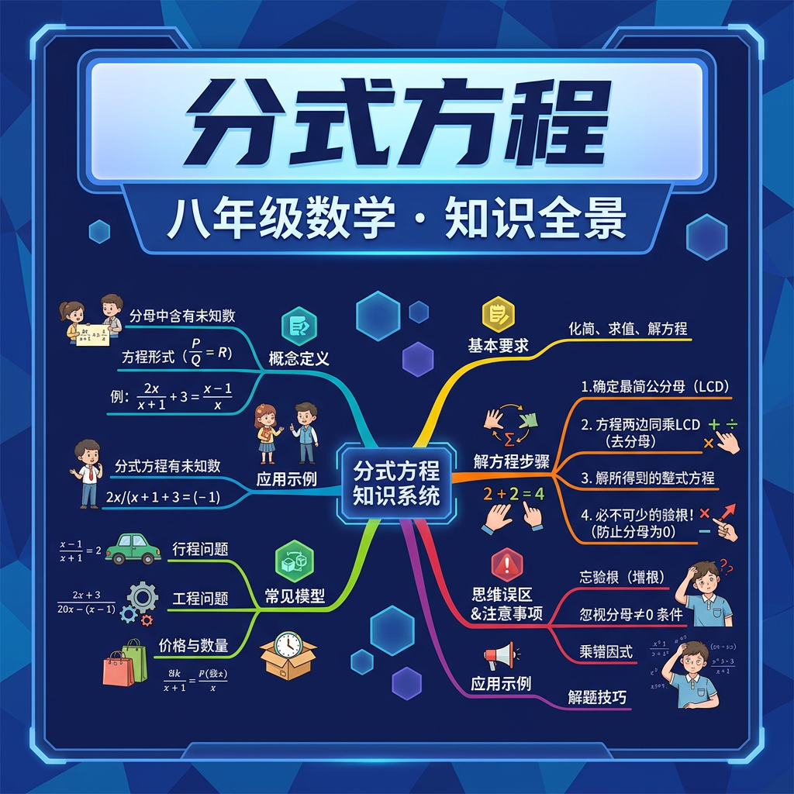

分母含未知数？小心增根的陷阱！

🚗 小李开车从A到B，速度为 v km/h，距离60km，需要 60/v 小时。若速度增加20 km/h，时间减少1小时，建立方程：
注意分母中含有未知数 v！这就是分式方程。
| 类型 | 特征 | 例子 |
|---|---|---|
| 整式方程 | 分母不含未知数 | 2x + 3 = 7 |
| 分式方程 | 分母含未知数 | 1/x + 2 = 3/x |
分式方程的分母不能为零！这是后面产生增根问题的根源。解题时必须检验解是否使原方程的分母为零。
分式方程难以直接求解，但如果两边同乘以最简公分母，就能把分式方程转化为整式方程来解！
例题：解 1/(x-2) + 1 = 3/(x-2)
去分母后得到的整式方程的解，可能恰好使原分式方程的分母为零。这个解在整式方程中有意义，但在原分式方程中无意义，叫做增根，必须舍去！
例：解 (x+1)/(x-1) = 2/(x-1)
解 x = k 代入所有分母，分母均 ≠ 0
→ 保留该解
解 x = k 代入某个分母，使分母 = 0
→ 舍去该解，注明"原方程无解"
不验根是解分式方程最严重的错误，会导致答案错误。每次都要检验解是否使分母为零。
任务：甲单独完成某项工程需要10天，乙单独完成需要15天。两人合作，完成后甲还需单独继续工作x天才能完成剩余部分，使整个工程恰好在8天内完成。求x。
【重建题目】甲独做10天，乙独做15天，合作几天完成？
设合作 x 天：x/10 + x/15 = 1
公分母30：3x + 2x = 30 → 5x = 30 → x = 6
合作6天完成。验根：x=6，分母10和15均≠0 ✓
时间=距离/速度，建立分式方程，解决追及和相遇问题
效率×时间=工程量，分式方程在工程中的经典应用
溶质/溶液=浓度，含分式的化学数学综合题
为什么增根产生？等价变换与非等价变换的区别
分式方程是指分母中含有未知数的方程，例如 (x+1)/(x-2)=3。其核心特征是分母必须包含变量，否则就是整式方程。例如 2/x + 1 = 5 是分式方程，而 3x/4 = 6 不是。分式方程的一般形式为 P(x)/Q(x) = R(x)，其中 Q(x) ≠ 0。生活中常见于浓度问题：若将含盐 20% 的盐水 x 克与 30% 的盐水混合，得到 25% 的混合液，可建立方程 (0.2x + 0.3y)/(x+y) = 0.25。
解分式方程的关键步骤是找到所有分母的最简公分母（LCD）。例如解 1/(x+2) + 3/(x-1) = 5 时，LCD 为 (x+2)(x-1)。对于分母含多项式的情况需先因式分解：如解 2/(x²-4) - 1/(x+2) = 0 时，x²-4 分解为 (x+2)(x-2)，故 LCD 为 (x+2)(x-2)。学科应用如电路并联电阻公式 1/R = 1/R₁ + 1/R₂ 中，LCD 就是 R·R₁·R₂。注意：当分母互为相反数时（如 x-3 与 3-x），需提取负号统一形式。
去分母时需用 LCD 乘以方程两边所有项。以 (x-1)/(x+3) = 2/(x-5) 为例：① 确定 LCD=(x+3)(x-5)；② 两边同乘 LCD 得 (x-1)(x-5)=2(x+3)；③ 展开得 x²-6x+5=2x+6。特别注意：必须乘以每一项，包括常数项！例如解 3/x + 2 = 5 时，去分母后应为 3 + 2x = 5x（不能漏乘右边的 5）。物理中的透镜公式 1/u + 1/v = 1/f 去分母后变为 vf + uf = uv。
分式方程可能产生增根（使分母为零的解），必须验算。例如解 x/(x-3) = 3/(x-3) + 2 时，去分母得 x=3+2(x-3)，解得 x=3。但代入原方程会使分母为零，故舍去。验算步骤：① 将解代入原方程所有分母；② 若有分母为零则舍去。实际应用如工程问题：甲队单独完成工程需 x 天，乙队需 x+5 天，合作需 6 天，建立方程 1/x + 1/(x+5) = 1/6，解得的负数根需舍去。
当方程含字母参数时，需分类讨论。例如解 a/(x-2) = 1 时：① 若 a≠0，则 x=a+2；② 若 a=0 则方程无解。更复杂的情况如 (k²-1)x/(x-1) = k 需要：① 讨论 k²-1 是否为零；② 检验 x=1 是否为增根。化学稀释问题中可能出现参数：将 c₁ 浓度的溶液 V₁ 升与 c₂ 浓度的 V₂ 升混合，得到浓度 (c₁V₁ + c₂V₂)/(V₁+V₂) = c₃，此时 V₂ 可作为参数求解。
通过实际问题建立分式方程需注意单位统一。典型场景：① 行程问题：甲乙速度分别为 v₁、v₂，相遇时间 t 满足 v₁t + v₂t = S；② 工作效率：甲每天完成 1/x 工作量，合作方程如 1/x + 1/(x+3) = 1/2；③ 经济问题：商品原价 p，第一次降价 a%，第二次降 b%，现价 p(1-a%)(1-b%)。案例：轮船顺流速度（静水速+水速）为 x+3，逆流为 x-3，往返时间差建立方程 100/(x+3) - 100/(x-3) = 1。
对于多层分式方程，可采用逐步消元法。例如解 [2/(x+1) - 1]/[3 + 1/(x-2)] = 1/4 时：① 设分子部分为 A，分母为 B，先解 A/B=1/4；② 分别化简 A= (2-x-1)/(x+1) = (1-x)/(x+1)，B= [3(x-2)+1]/(x-2) = (3x-5)/(x-2)；③ 最终转化为整式方程 4(1-x)(x-2)=(x+1)(3x-5)。生物学中种群增长模型 N(t)=N₀/(1+e⁻ᵏᵗ) 也可能需要类似化简技巧求解参数 k。
解分式方程组常用方法：① 分别去分母后解线性方程组；② 变量代换法。例如解 { 2/x + 3/y = 5, 1/x - 2/y = -1 }：设 u=1/x，v=1/y，转化为 { 2u+3v=5, u-2v=-1 }，解得 u=1，v=1，故 x=1，y=1。物理中的电阻-电导关系方程组 { G₁=1/R₁, G₂=1/R₂, G=G₁+G₂ } 也适用此法。注意：最后仍需验证是否使原方程组分母为零。
分式方程在生活中有广泛的应用场景。例如工程问题中，甲单独完成一项工作需要6天，乙需要4天，两人合作需要多少天？设合作需要x天，可建立方程1/6 + 1/4 = 1/x。解这个方程时，首先找到公分母12，转化为2/12 + 3/12 = 1/x，即5/12 = 1/x，解得x=12/5=2.4天。再比如浓度问题：现有20%的盐水300ml，要加入多少纯水才能得到15%的盐水？设加入x ml水，建立方程(300×20%)/(300+x)=15%，即60/(300+x)=0.15，解得x=100ml。
解分式方程时必须检验增根，因为去分母时可能产生使原方程分母为零的解。例如解方程(x+3)/(x-2)=4/(x-2)，直接去分母得x+3=4，解得x=1。但检验时发现x=1不会使原方程分母为零，是有效解。再看另一个例子：(x²-9)/(x-3)=6，约分得x+3=6，解得x=3。但x=3会使原方程分母为零，因此是增根，原方程无解。在解应用题时更要注意：若解出甲单独完成工作的时间是-5天，显然要舍去这个不符合实际的解。检验步骤不可省略，这是分式方程与整式方程的重要区别。
1. 方程 3/(x-2) = 5 是分式方程吗？为什么？ 2. 如何快速判断 x/(x²-1) + 1/(x+1) = 0 的最简公分母？ 3. 解方程 2/x = 3 时，为什么不能直接写成 x=2/3？
1. 解方程 (x+5)/(x²-9) + 2/(x+3) = 0 2. 若关于 x 的方程 a/(x-1) = 2 无解，求 a 的值 3. 甲乙合修水管需 12 小时，甲单独比乙少用 10 小时，求各自用时
常见错因：1. 去分母时漏乘常数项（如将 1/x + 2 = 3 误化为 1 + 2 = 3x）。误区诊断：通过分步涂色法标记每项所乘的 LCD。2. 忽略验根导致增根错误，需强化“解必须使分母≠0”的意识。3. 最简公分母选取错误，建议用因式分解树状图辅助分析。
迁移挑战：设计一个关于校园垃圾分类效率的实际问题，要求：① 建立分式方程模型（包含两个分类员的不同工作效率）② 分析方程解的合理性 ③ 探究当分类速度提升 20% 时对结果的影响